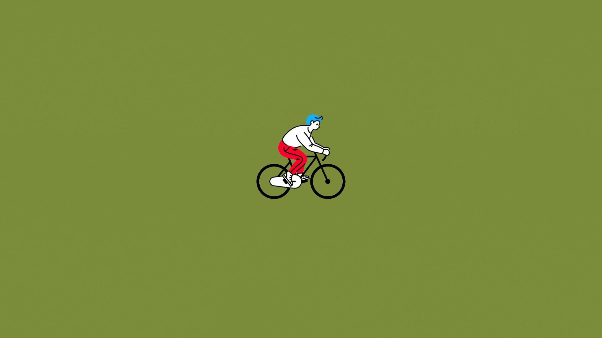

Maximize your time in Entebbe with our 2.5-3 hour bike tour for only 30$. This tour showcases the main and minor highlights of the municipality, providing an unforgettable glimpse into the beauty of Entebbe. Ideal for those with limited time, our tour offers great value for its cost and is an excellent option for making the most of your visit.

Discover Entebbe's beauty with Bike2go's Layover Tour. Choose from two options: our 4-hour tour for $45 covers Reptile Village, Botanical Gardens, market, fishing site, beach & main attractions, while our 3.5-hour tour for $35 covers same sights except for Reptile Village. Both tours offer birdwatching at the Botanical Gardens, showcasing Entebbe's main highlights in a professional & unforgettable way.

Experience Entebbe's rich history and culture in a unique way with Bike2Go's expert-led tour. Explore the Entebbe Botanical Gardens, Freedom Tree Entebbe, Secretariat building, Entebbe za Magula Cultural Center, Entebbe Golf Club, and Historical Old Entebbe Airport, all while biking. Our tour includes bike rental, guide, and entrance fees for only $40. Join us for an unforgettable journey through Entebbe's past and present.

Experience the best of both worlds with our Entebbe-Bussi Island Bike & Boat tour. Take in the beauty of Lake Victoria's Bussi Island, known for its stunning beaches and lush vegetation, with a combination of biking and a scenic boat ride. At the end, you have the option to tackle the zip line and obstacle course. Prices start at $75 for one person and $50 per person for groups of 2 or more. Don't miss out on this unforgettable adventure. Join us now.
Explore Entebbe on your own with our well-maintained bikes, available for rent at an affordable price of $25 for one day, or $20 if you rent for three or more days. Each rental comes with a lock, helmet, and map of the area, ensuring a worry-free adventure. Discover the beautiful shores of Lake Victoria or explore vibrant local markets with ease.
Bike2go Entebbe Bicycle Tour Company is a small business that has been operating for five years, offering guided bike tours and rentals in Entebbe, Uganda. The company was founded by two brothers who grew up in Entebbe and noticed that many visitors to the town missed out on its unique beauty and charm. Often considered just a stopover on the way to the city, Entebbe had much to offer, and the brothers recognized the need to showcase its hidden gems and provide an eco-friendly means of exploring the area. Their vision was to promote bike travel, which not only provides a fun and exciting way to experience Entebbe but also contributes to a more sustainable tourism industry. With Bike2go, visitors can immerse themselves in the town's culture and beauty while reducing their impact on the environment. The company is proud to have received recommendations from over 105 satisfied customers and is continually working to improve its services and offer an even better experience. Below are some of the awards of excellence that Bike2go has received along the way.
Bike2go Entebbe Bicycle Tour Company offers guided bike tours and rentals in Entebbe, Uganda. Founded by two brothers who grew up in Entebbe, the company showcases the town's hidden gems and provides an eco-friendly means of exploring the area. With Bike2go, visitors can immerse themselves in the town's culture and beauty while reducing their impact on the environment. Check out our excellent reviews and awards on Tripadvisor


Got questions? We're here to help!
Phone: +256782663510
Email: info@bike2goentebbe.com
We love hearing from our customers and we're always happy to assist you in any way we can. Our team is available during our office hours:
Don't hesitate to reach out to us with any inquiries about our tours or rental services. We'll get back to you as soon as possible. Additionally, if you have any general questions about our services, our FAQ page may be a great resource for you. Don't hesitate to contact us with any inquiries about our tours or rental services, and we'll get back to you as soon as possible.
*If you contact us outside of these hours, we will still respond to your inquiry, but it may not be as fast as during our working hours.
Questions? Contact us!
Our team is happy to help during our office hours:
For general questions, check out our FAQpage. We'll respond to your inquiries about tours and rentals as soon as possible. If you contact us outside of office hours, expect a delay in our response time.